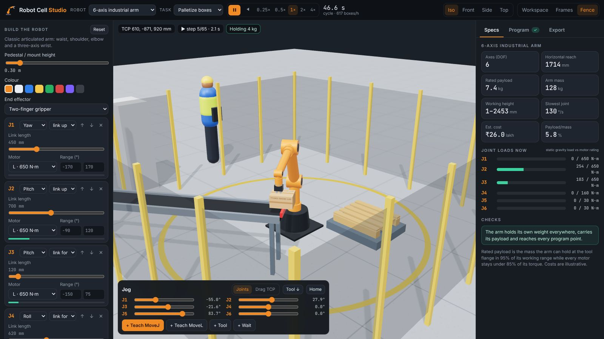
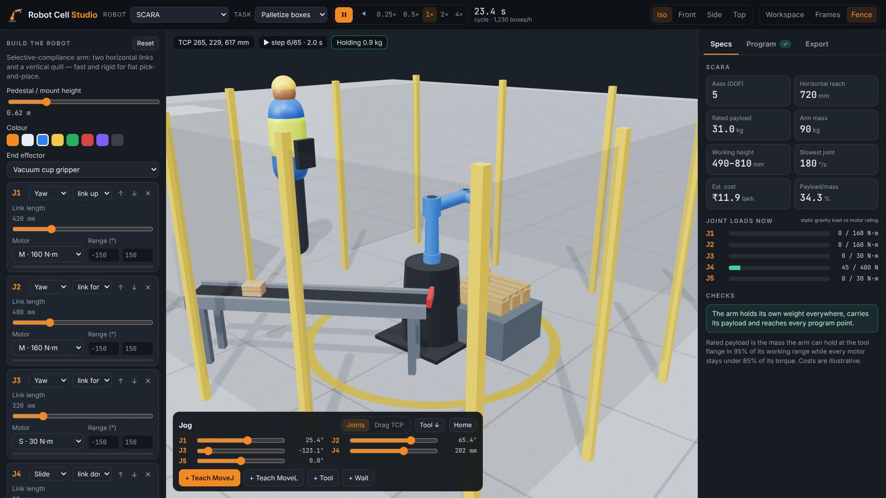
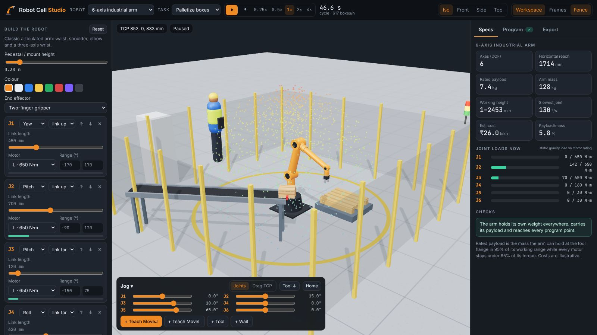
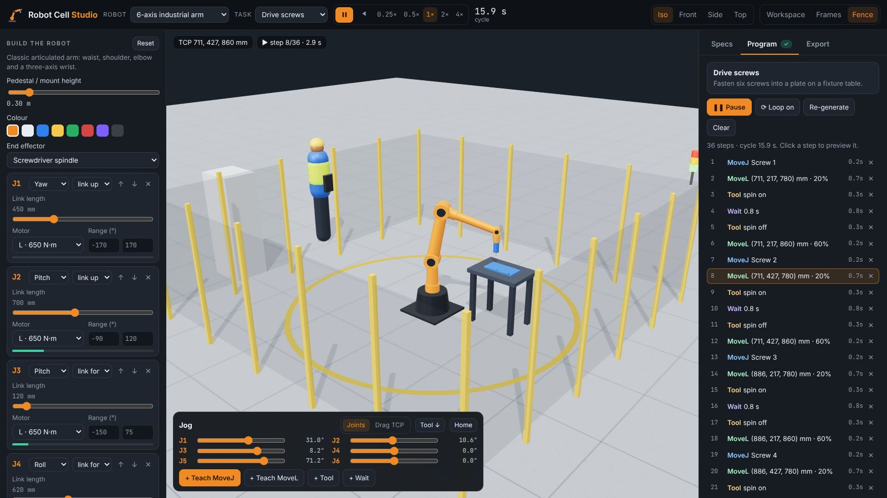
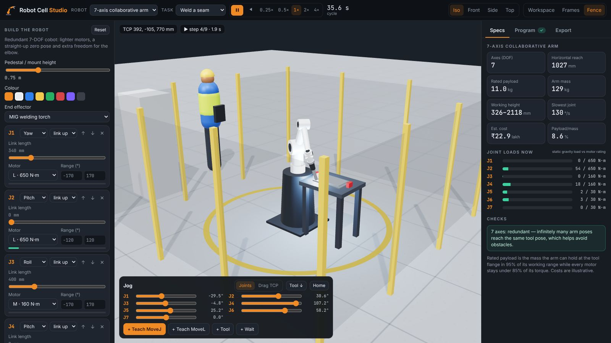
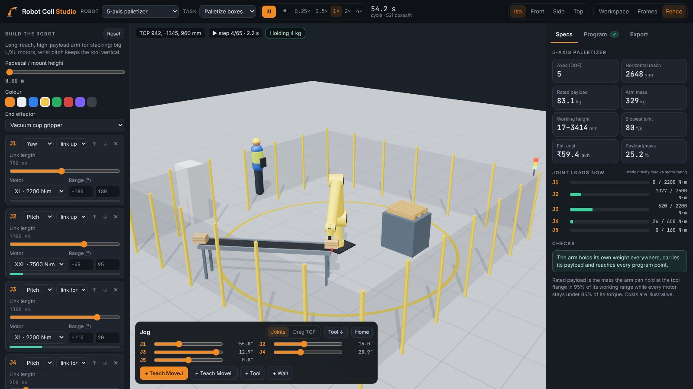

Robot Cell Studio¶
Design a factory robot joint by joint, see what it can reach and lift, then program it in a 3D work cell: palletizing, welding or driving screws. You can also teach your own moves. When the design works, export it as URDF.
Open Robot Cell Studio Source on GitHub

Robots to start from¶
| Preset | Axes | Typical use | Rated payload* | Reach |
|---|---|---|---|---|
| 6-axis industrial arm | 6 | General handling, machine tending, welding | ~7 kg | 1.7 m |
| 7-axis collaborative arm | 7 | Work next to people; the redundant elbow avoids obstacles | ~11 kg | 1.0 m |
| SCARA | 5 | Fast, flat pick-and-place and assembly | ~31 kg (quill) | 0.7 m |
| 5-axis palletizer | 5 | Stacking heavy cases and sacks | ~83 kg | 2.6 m |
| Cartesian gantry | 4 | Accurate overhead handling over a rectangle | ~125 kg | 2.0 × 2.0 m |
*Computed by the app from the motors you choose; see below.
Building¶
A robot is a pedestal followed by a chain of joints, each with the link that follows it.
| Joint | Moves | Example |
|---|---|---|
| Yaw | Turns about the vertical | Waist of an arm, SCARA arms |
| Pitch | Bends about a horizontal axis | Shoulder, elbow, wrist bend |
| Roll | Twists about its own link | Forearm and wrist roll, cobot joints |
| Slide | Moves linearly along its link | Gantry axes, SCARA quill |
For every joint you can set:
- the link direction (up, forward, sideways or down) and its length
- the motor size: S 30 N·m, M 160 N·m, L 650 N·m, XL 2,200 N·m or XXL 7,500 N·m (or 400 N to 40,000 N for slides). Each size has its own mass, speed and cost.
- the travel limits
You can add up to 9 joints, reorder them, change the pedestal height and colour, and fit a two-finger gripper, vacuum cup, MIG welding torch or screwdriver.

Specs and checks¶
- Kinematics: forward kinematics are computed live for any chain. Horizontal reach and working height come from 1,400 random joint configurations, which can also be shown as a coloured workspace point cloud.
- Rated payload: for 500 poses the app computes the static gravity load on every joint from link, motor and tool masses. The rated payload is the largest mass at the flange that keeps every motor under 85% of its rating in 95% of the workspace.
- Joint load bars: show the live load on each motor against its rating, including the box being carried.
- Warnings: an arm that cannot hold its own weight, payload under 1 kg, too few axes to orient the tool, parts of the arm through the floor, and unreachable program points.
- Mass and cost: arm mass and an illustrative cost in ₹ lakh.

Programming¶

- Task templates lay out the cell around your robot. They search conveyor, pallet and
fixture positions and heights until every point of the program is reachable, with the
tool pointing the way the task needs.
- Palletize boxes: pick boxes from the end of a conveyor and stack 2 × 2 × 2 on a pallet (raised on a stand if the arm can't reach low). Shows boxes per hour.
- Weld a seam: run a MIG torch around a rectangular seam. It uses a pushing angle if the arm can tilt the torch all the way round, otherwise vertical. Sparks, arc light and a growing weld bead are drawn.
- Drive screws: fasten six screws into a plate.
- Teach your own: an empty program.
- Jog each joint with sliders, or switch to Drag TCP and move the tool with the handle. The arm follows with damped-least-squares inverse kinematics, solving position and tool-axis direction for any number of joints. Tool ↓ points the tool straight down.
- Teach MoveJ (joint move) and MoveL (straight-line move) points, then add tool and wait steps.
- Compile checks: each step is solved and checked for reach, straight-line feasibility (IK every 15 mm along the path), floor collisions and joint speed limits, then timed. Unreachable steps are marked and the cell's light tower turns red.

Export¶
- URDF: links, revolute and prismatic joints with axes, origins, limits, effort and velocity, cylinders for visuals and collisions, and estimated masses and inertias. Ready for ROS 2, MoveIt, Gazebo or Isaac Sim.
- Program script: a vendor-neutral
.rcslisting ofMOVEJ J[...],MOVEL P[...] AXIS[...],TOOLandWAITlines, in degrees and millimetres. - Project: save or open JSON, or copy a share link that holds the robot design
(
#task=weld&r=…, or a preset such as#p=scara&task=palletize).

5-axis palletizer¶
XXL shoulder motor and long links: 2.6 m reach, ~83 kg rated payload.
Files¶
projects/robot-cell-studio/
├── index.html · styles.css
└── src/
├── robot.js # modules, motors, tools, presets, FK, DLS IK, joint loads, payload, URDF
├── program.js # compile (IK, reach, timing) and playback interpolation
├── tasks.js # palletize / weld / screw templates that fit the cell to the robot
├── scene.js # three.js robot, cell (fence, conveyor, pallet, fixtures), sparks, envelope
└── main.js # builder UI, jog and teach, program list, specs, export
Engineering estimates
Payload, loads, masses and costs come from a simple static model. It covers gravity only, with no dynamics, deflection or safety factors beyond the 85% torque margin. Use it to compare designs and learn, not to size a real robot.